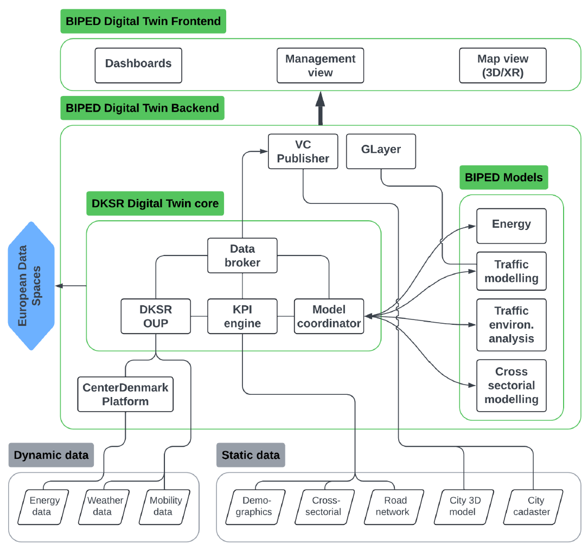
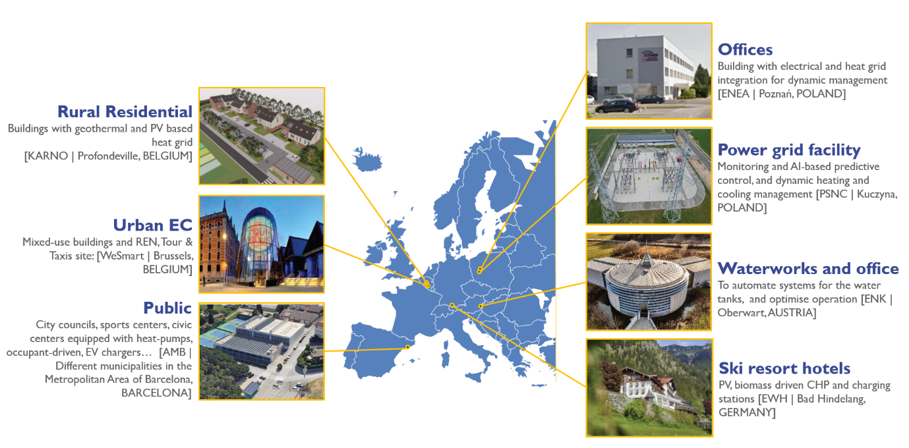
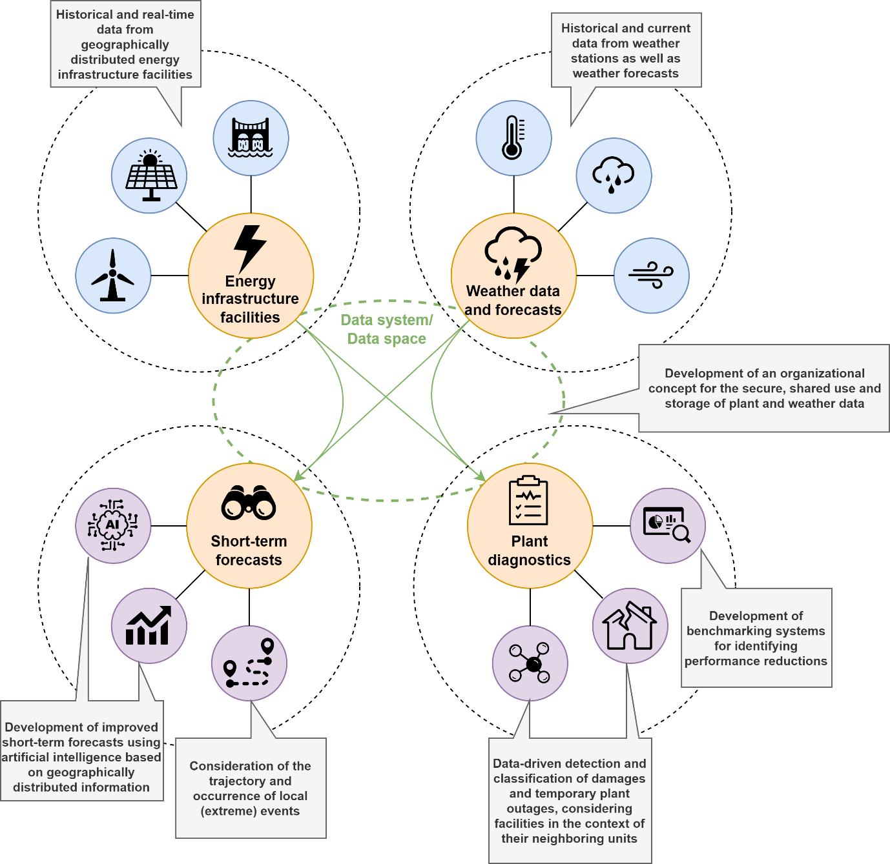
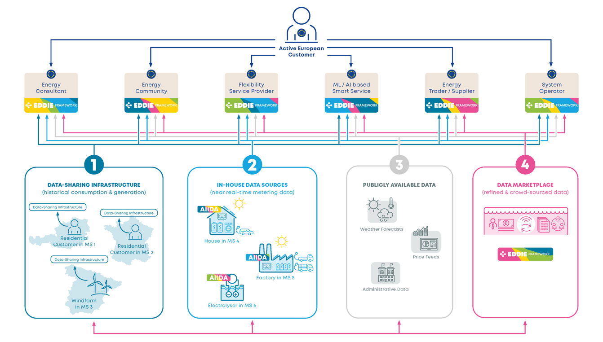
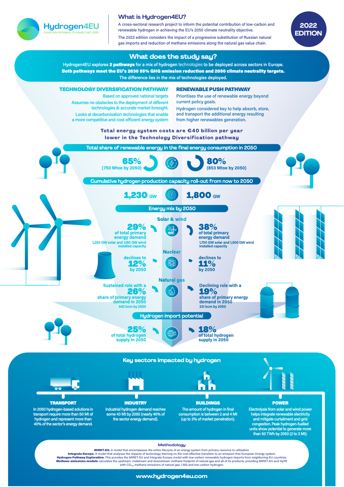
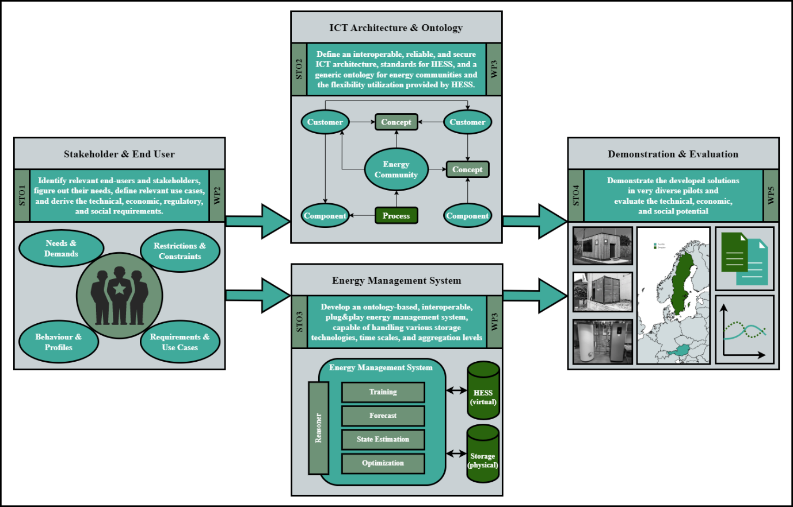

Table of Contents
Funded Projects
About
This chapter reviews selected EU-funded projects relevant to data spaces, data interoperability, trusted data exchange, and domain-specific implementations. Projects under Horizon Europe, Horizon 2020, and Digital Europe are analyzed to identify technical approaches, lessons learned, and gaps. Reviewing related projects allows us to avoid redundancy, build on successful methodologies, and recognize innovation trends. This comparative analysis informs the project's design choices, highlights potential synergies, and reinforces its added value to the European research and innovation landscape.
AI4EU
In the complex world of technological innovation, the AI4EU project [25] emerged as a bold attempt to redefine Europe's position in the global AI landscape. Launched in 2019 with a €20 million budget, this ambitious initiative brought together an unprecedented coalition of 80 partners from 21 countries—a mosaic of academic institutions, industry giants, small businesses, and public organizations.
The heart of the project was an audacious goal: Creating the first European AI On-Demand Platform. Imagine a digital marketplace where AI resources converge, a place where a startup in Lisbon could access the same cutting-edge tools as a research center in Berlin. It wasn't just about technology; it was about democratizing innovation.
Through eight carefully selected pilot projects, the team demonstrated AI's transformative potential. In Spain's wine country, computer vision algorithms began predicting grape yields with remarkable precision. A personal AI assistant helped students navigate the complex world of internships. These weren't just technological experiments, they were glimpses into a future where AI solves real-world challenges.
The project's commitment to ethics set it apart. The European Ethical Observatory wasn't an afterthought but a core principle. They developed frameworks to ensure AI technologies remained fair, transparent, and fundamentally human-centric. In an era of growing technological scepticism, this approach was revolutionary.
Financial support played a crucial role. By allocating €3 million in cascade funding, AI4EU empowered over 100 enterprises to push technological boundaries. Startups that might have struggled to secure traditional funding suddenly had a pathway to innovation.
Perhaps most importantly, the project looked beyond its three-year timeline. The establishment of the AI4EU Foundation ensured that the momentum wouldn't simply dissipate. A Strategic Research Innovation Agenda was crafted, influencing future European AI initiatives and cementing a vision of technology that serves humanity.
As the project concluded in December 2021, it had done more than create a platform. It had sparked a movement: a collaborative, ethical approach to AI that could potentially reshape how we understand technological progress. Europe wasn't just participating in the AI revolution; it was defining its own unique path.
Relevance to CELINE
Project CELINE, which seeks to advance digital services in the energy sector through integrated, cross-sectorial solutions, aligns closely with AI4EU’s mission. CELINE’s development of AI-driven tools, such as digital twins and AI assistants for energy communities, could utilize the AI resources and expertise available on the AI4EU platform. Research from AI4EU, particularly in Explainable and Verifiable AI, may enhance the transparency and reliability of CELINE’s AI systems, fostering trust among users. Additionally, AI4EU’s ethical guidelines can ensure CELINE’s technologies adhere to European values, crucial for handling sensitive community data. These synergies highlight how AI4EU’s infrastructure supports sector-specific digital transformations like CELINE’s, promoting sustainable energy innovation.
Battery2030+
The ambition of the Battery 2030+ [26] initiative is to make Europe a world-leader in the development and production of the batteries of the future. To facilitate the transition towards a climate-neutral society, these batteries need to store more energy, have a longer life, be safer, and be more environmentally friendly than today’s batteries.
Relevance to CELINE
The project is not so relevant for CELINE activities, but maybe from the EV charging, if there is in the demo sites, or users with batteries, the energy communities use batteries, then the results and information could be beneficial.
BeyondEE
Lappeenranta is a vibrant Finnish city situated on the shores of a sparkling lake, with a population of approximately 73,000 residents. The city is actively striving to achieve carbon neutrality by 2030. Central to this ambitious goal is a groundbreaking pilot project designed to leverage digital innovations to enhance district heating systems while empowering local users [159].
Key Objectives and Activities:
-
Transforming to Fossil-Free District Heating: Lappeenranta has set an ambitious goal to achieve 100% fossil-free district heating by 2026. Currently, the city's district heating infrastructure and its backup systems, which rely on fuel oil and natural gas, account for approximately 10% of total emissions. This innovative pilot project aims to explore alternative energy sources that reduce reliance on imported fossil fuels, especially during peak demand periods, thereby ensuring a cleaner and more sustainable energy future.
-
Innovative Digital Optimization: This project utilizes advanced demand-response strategies to effectively manage peak heating loads in both residential and commercial buildings. By harnessing real-time data on building conditions and weather, the digital solutions aim to reduce unnecessary heating. This approach could result in significant annual energy savings of 5–10% in electricity and district heating consumption.
-
Enhancing User Comfort: The system is designed with user experience in mind, enhancing the comfort of inhabitants by preventing excessive indoor heating and monitoring the thermal environment. It also proactively identifies maintenance needs for heating devices, ensuring that the systems operate efficiently and effectively for all users.
-
Integration of ICT Tools: The ambitious pilot project involves carefully establishing system requirements, preparing the building infrastructure, and implementing advanced ICT solutions. This includes developing digital twins, deploying thermal environment sensors, and providing optimization interfaces through cloud software services. Comprehensive impact assessments and user feedback surveys will be conducted to evaluate the effectiveness and scalability of these innovative solutions.
Relevance to CELINE
Beyond EE will deliver valuable insights into the energy needs of the business and residents of Lappeenranta. Both projects have the potential to support each other by sharing insights and resources developed within each project.
BIPED
Building Intelligent Positive Energy Districts (BIPED) [1], [27] is a Horizon Europe Innovation Action running from January 2024 to December 2026 under the coordination of the Technical University of Denmark (DTU). The project tackles the current limitations of Positive Energy District (PED) modelling by pursuing a set of interlocking objectives. First, it will extend local digital twins beyond conventional energy and mobility data so that each district profile also captures social, economic, and environmental layers, thereby providing a far more complete basis for design and performance assessment. Second, BIPED will establish quantitative methods for collecting, managing, and processing both “hard” sensor streams and “soft” stakeholder inputs across multiple spatial and temporal hierarchies, ensuring that the digital twins remain accurate and actionable in real time. Third, the consortium aims to unlock an AI-driven, self-learning optimization framework that fuses bottom-up physics-based models with top-down analytics; this hierarchy of tools will be enabled by Minimal Interoperability Mechanisms (MIMs) so that decision-making can be coherently scaled from individual assets to city level. A fourth objective is to maximize replication: by codifying results in open interoperability profiles and policy guidelines, BIPED intends to make its Brabrand demonstrator a transferable template for the 80,000 municipalities across the EU27. Complementing these technical goals, the project will foster an open technical and policy environment (again anchored in MIMs) to accelerate Europe-wide standardization and stakeholder trust. The primary demonstration in Brabrand, Denmark, will show how deep community engagement, high-penetration renewables and continuous twin-enabled monitoring can converge into a living laboratory for climate-neutral urban development.

Figure 3: The Digital Twin Architecture proposed by the BIPED project [27].
The initial release of BIPED’s digital-twin platform sets out a modular three-layer architecture. Exogenous data sources (energy networks, traffic sensors, 3-D city models and cross-sectoral datasets) feed a backend that is split into an event-driven ingestion layer—handled by the open-source DKSR Open Urban Platform for high-velocity streams, a KPI engine for periodic static data and a VC Publisher path for large 3-D assets—followed by a model-coordination layer that orchestrates domain models and stores their outputs. The DKSR platform implements a lambda architecture with Vert.x micro-services, an in-memory/no-SQL hierarchy, and Apache Livy-to-Spark analytics, all conformant with DIN SPEC 91357 for open urban platforms. Model outputs and raw context data are exposed through a data broker, VC Publisher, and the GPU-accelerated GLayer server to a frontend comprising a Cesium-based 3-D map, configurable dashboards, and a management console. Non-functional requirements emphasize open-source licensing, MIM-compliant APIs for context information, data models, and geospatial alignment, and GDPR-aligned trust services, ensuring that the platform remains extensible and replicable across Europe.
Relevance to CELINE
A Minimal Interoperability Mechanism (MIM) is a vendor-neutral, technology-agnostic building block defined by the Open & Agile Smart Cities (OASC) network and the Living-in.EU movement to guarantee a minimal yet sufficient level of interoperability between data, systems, and services in smart-city and data-space environments. Adopting BIPED’s MIM-aligned interfaces and open-source core (DKSR OUP, VC Map) will help CELINE to achieve compliance with European data-sovereignty and interoperability standards, while the hierarchical learning and optimization concepts documented in BIPED provide a scientifically grounded template for combining bottom-up asset models with top-down AI analytics.
BlueBird
The BlueBird [28] project aims to demonstrate that buildings can be energy flexibility assets in EU electricity systems to contribute to energy efficiency and renewable energy resources to the energy transition and achieve the Green Deal and sustainable targets. However, current flexibility schemes exhibit several important shortcomings, like the limited number of flexible assets and few design methodologies and business models implemented. Thus, market operation is far to maximally incorporate and benefiting from demand side flexibility services, and to exploit them for operational and ancillary services that address their technical issues of ensuring resilience, efficiency, and reliability for modern electrical grids.
BlueBird will deliver a comprehensive and validated toolset, to fully allow competitive adoption of buildings as energy flexibility assets supporting smooth integration of services towards energy market players (i.e., TSO, DSO, aggregators) while maximally aligning with end-users' (i.e., building managers, occupants) requirements and acceptance criteria. The project will enable connecting any building type to provide services to:
-
Optimise the building’s internal operation or flexibility, based on price signal (exploiting the synergies between all different systems connected to it, i.e., HVAC, storage, RES, DH, geothermal, gas...) and considering events and building usage conditions coming from external factors such as weather conditions, traffic conditions, air pollution, etc.
-
Optimize towards energy markets and offering flexibility services to a grid operator through aggregation by a Trading Manager (TM) that presents buildings as Distributed Energy Resources (DERs), and thus summing buildings power to required magnitudes.
The flexibility services will be developed and tested through 7 pilot sites in 5 countries with different building typologies represented.
The BlueBird toolset will enable buildings to adapt to a wide range of operation modes, depending on the specific local conditions of the building (e.g., regulatory conditions, DR incentives). The specific services that can be implemented for a building will also depend on the Smart Readiness Indicator (SRI) of each building, the assets availability and their controllability and flexibility (i.e., essentially the technical capabilities of the BEMS).

Figure 4: BlueBird buildings demo sites overview [28].
Relevance to CELINE
BlueBird can be a reference for applying flexibility models in CELINE, especially regarding use cases in residential buildings, but also in office buildings may be of interest. Both projects started almost at the same time, and their evolution will progress in parallel, which may allow replicating or adapting their developments.
Climate-Ready Barcelona Project
The Climate-Ready Barcelona Project aims to create an integrated framework that harmonizes currently fragmented data from both public and private sources. At its core, the project develops an AI-driven ecosystem with interactive user interfaces to enhance the existing EAC software, improving communication between citizens and professionals. The central output of the project is a climate vulnerability map for households, which incorporates a climate inequality index to identify and address environmental and social disparities at the local level.
Relevance to CELINE
To structure and connect diverse datasets, the project applies linked data principles, enabling their transformation into a unified, interoperable framework. By leveraging advanced AI technologies, it improves data accessibility and user interaction, supporting evidence-based and inclusive decision-making. The resulting visualizations will help stakeholders better understand climate risks by neighbourhood and demographic groups, thus facilitating targeted interventions and informed policy development.
CLIMRES
The significant frequency and severity of extreme weather events, especially in the broader Mediterranean region, showcase the devastating consequences of climate-related disruptions. These disruptive events have not only devastated ecosystems and homes but have also highlighted the direct need for improved building resilience and community-centred planning.
The project CLIMRES [29] aims to foster a ‘Leadership for Climate Resilient Buildings’, by addressing the identification and systematic categorisation of buildings’ vulnerabilities and estimating their impact in the buildings' ecosystem, considering the interlinkages within the urban context. The project will deliver vulnerability assessment and impact evaluation methodologies along with an inventory hub of measures for building materials and design against climate risks and a decision support toolkit addressing three levels of decision making at strategic, tactical and operational levels.
CLIMRES solutions will be tested and evaluated in 3 large-scale pilots in Spain, Greece, Italy and Slovenia, and one multi-hazard replication multiplier pilot in France.
-
Resilience to heatwaves in Barcelona (Spain): The scope is to improve climate resilience in residential buildings within the Besós district of Barcelona, which is already undergoing an ambitious energy retrofitting process.
-
Resilience to wildfires and earthquakes in the metropolitan area of Athens (Greece): This area has consistently ranked among the most susceptible areas in the country when it comes to natural disasters. CLIMRES will gain insights from areas that have experienced intense fires and earthquakes in the past and are at a heightened risk in the future.
-
Resilience to floods in Senigallia and Ljubljana (Italy and Slovenia): The objective is to enhance climate resilience in buildings in two different locations, within the city centre of Senigallia at the Mediterranean coast, in Italy (recently affected by many floods), and in Ljubljana’s Vič district (an area susceptible to urban pluvial floods).
-
Multi-hazard resilience (floods and heatwaves): The replication will take place in the Region of Compiegne (France), which is particularly affected by the increase in extreme rainfall, flooding, high winds, and heat.
Relevance to CELINE
The experiences and lessons learnt from the extensive pilot evaluation will inform the replication roadmap of the project as well as a capacity-building programme that will train the next frontier leaders for climate-resilient buildings. Overall, the CLIMRES Leadership will provide valuable insights and guidance for building owners, policymakers, and stakeholders involved in building climate resilience and sustainable development, through the co-creation, development, deployment, and demonstration at TRL 6-8 highly cost-effective and replicable solutions.
COMANAGE
The COMANAGE project [30] is designed to tackle the governance and management challenges faced by citizen-led energy initiatives, particularly those involving public participation. These energy communities often encounter a range of legal, administrative, financial, social, and organizational obstacles. COMANAGE seeks to address these issues by developing both a methodological and operational governance framework for energy communities. The project aims to provide public authorities with a comprehensive set of services, tools, and mechanisms to facilitate the governance and management of these communities. This will help ensure the long-term sustainability and growth of citizen-led energy initiatives.
Relevance to CELINE
For CELINE, COMANAGE's focus on addressing governance barriers is highly relevant. CELINE also aims to empower communities by supporting decentralized energy systems, particularly using digital tools and data-driven services. The methodologies and frameworks developed in COMANAGE could complement CELINE’s approach to promoting community-led energy initiatives. Both projects aim to overcome the resistance and barriers communities face when adopting new energy models, with CELINE focusing on digital tools and COMANAGE addressing the governance aspects.
COMMUNITAS
COMMUNITAS' [31] principal goal is to pave the way for the empowerment and engagement of different types of consumers and prosumers, placing them at the heart of energy markets. It will do so by boosting the creation and exploiting the potentialities of ECs as hubs for innovative energy services, integrated with non-energy benefits, co-created together with citizens and other stakeholders. The project will put consumers organised in ECs at the forefront of the digitalisation, decentralisation, decarbonisation, and democratisation of the energy sector. Information technologies such as IoT and Blockchain also show potential to provide citizens with a method for interacting with the energy markets, namely by enabling the aggregation of loads or tracking energy and monetary transactions performed at a local level. COMMUNITAS will explore such technologies and use them to provide an innovative set of 12 Innovative Solutions (IS) to unlock citizens’ active participation in energy markets (all integrated into an open, digital “one-stop-shop” COMMUNITAS Core Platform (CCP)), allowing EC members to have an aggregated position in the energy markets and explore ancillary services.
COMMUNITAS will promote energy citizenship, enabling citizens to take control of their path towards sustainability by becoming an active element of the energy markets. Activities conducted within the project duration will also generate new business models that finance and support the set-up of ECs, leading to new market roles and frameworks. It will also develop a Knowledge Base that will provide users with technical, administrative, and legal information on ECs, streamlining the creation and expansion of this concept.
The consortium has been carefully assembled to implement and develop mechanisms that promote the creation and expansion of ECs across Europe, as well as to drive the participation of citizens in energy markets. The consortium is coordinated by EDP L (coordination of three large H2020 projects), integrating 18 experienced, high-profile, and skilled organizations. The geographical aspect has been considered to ensure the broadest geographical coverage in both warm and cold climates. The consortium consists of a multidisciplinary team of 18 partners from 8 EU countries (Portugal, Greece, Italy, Spain, Netherlands, Denmark, Poland, Croatia). The main criteria for the selection of the consortium were the expertise and complementarities of each partner. The consortium is constituted by academia/R&D institutions (UNINOVA, UNL, FBK, CERTH; TNO, UNIZAG), publicly owned energy and environment companies (ACSM and EMAC), industrial/utility partners (EDP L, SEL, ETRA, RINA), energy cooperatives (Enercoop, Grunneger Power) and SMEs (E@W, ASM, EGC, WVT).
A core aspect of COMMUNITAS is its citizen-centric approach. The project involves citizens through Social and Policy Labs, ensuring that their feedback, needs, and preferences are integrated into the development of tools and platforms. This participatory process aims to foster social innovation and ensure that the solutions developed are aligned with the communities' expectations and requirements
Relevance to CELINE
As for CELINE the main goal of COMMUNITAS is to support the development of RECs in Europe. The services developed in COMMUNITAS, starting from the COMMUNITAS Core Platform, could be used by CELINE demos as facilitating tools for tackling the most common hurdles that RECs face, especially in their start-up phases. The innovative solutions developed and tested in COMMUNITAS could be used by CELINE partners as examples of services needed by RECs for better integrating their members and increasing their digital literacy and active participation in the RECs’ activities.
COSMIC
The project COSMIC [32] aims to provide IT systems that address large-scale energy resource optimization challenges by leveraging AI and data solutions by fostering collaboration between small and large companies to create industrial ecosystems, focused on key applications with the potential for substantial and scalable impact. COSMIC´s ecosystems are composed by large industries - facilitating big datasets and large-scale pilots, core technical partners - providing transversal-to-sector technical solutions, and SMEs and start-ups – bringing specific data/AI-based assets through open calls.
The project will offer a set of data/AI-based platforms, solutions, and modules as transversal core infrastructures able to accommodate external IT assets. Third Parties, mainly SMEs and start-ups, will bring these assets in the form of data/AI-based services and solutions, that are specific to an energy resources optimization key application. The integration of these core and application-oriented technologies will result in a set of Integrated AI Systems (IAIS) for Key Energy Resource Optimization Applications capable of scale-up to cover more key applications.
COSMIC will test these systems in 14 large-scale pilots in 5 countries: Spain, Belgium, Portugal, France, and Finland, and at the European level, together with the validation of end-user and final beneficiaries' acceptance of social-science methods. To foster replicability, a package will be offered including the lessons learned and recommendations for future adoption, including suggestions for feasible win-win industrial partnerships, and guidance on ecosystem sustainability.
Relevance to CELINE
The COSMIC approach to industrial EC should be of interest to CELINE, especially on the data integration and implementation side of technology architecture. Both projects started almost at the same time, and their evolution will progress in parallel, which may allow replicating or adapting some developments. Common partners in the two projects are: CIMNE, LUT and LAP.
DECODIT
DECODIT [33] stands for “Digital tools for enhancing the uptake of digital services in the energy market”. The project aims to develop multiple tools that present concrete, personalised, and comparable propositions to citizens for future-proofing their homes based on federated, data-driven services from multiple, diverse service providers will be developed. It aims to enable citizens to compare and select the options that best fit their specific situation and personal needs via apps supporting natural language interfaces. The project goal is to contribute to building decarbonization by facilitating energy renovations through personalized digital services.
Pilots are in Latvia, Spain, Greece, and Switzerland, covering a variety of building types, cultural, and regulatory contexts. The digital tools developed implement co-created services with citizens to ensure the solutions meet their specific needs.
Relevance to CELINE
DECODIT focuses more on individuals and home energy renovation, and CELINE on local energy communities, both projects converge on a shared vision: leveraging digital technologies to empower citizens and accelerate the energy transition in Europe. The development of those digital technologies is built on end-users' involvement in the design and co-creation process.
DEDALUS
The project DEDALUS [34] aims to empower residential consumers to engage in adaptable, tech-driven energy management solutions by combining leading-edge ICT technologies with social and behavioural dimensions, and with a sharing economy and value-stacking governance and business models.
The project's overarching goal is to deploy a social, technological, and business framework aimed at:
-
facilitating and scaling up residential energy consumers’ massive participation in Demand Response;
-
adapting to a variety of different mono-carrier (electricity, heat), or multi–carrier (electricity vs heat and natural gas) synergetic scenarios at building & district scale;
-
strengthening social interactions and synergies within the respective communities.
The Dedalus framework will be applied, implemented, and validated in 7 real-life pilots across 7 countries.
-
The Pilot based in Vienna (Austria) is led by a cooperative (OurPower) operating a P2P marketplace for matching RES electricity generated by its members with consumers. The pilot is composed by 84 private rentable serviced apartments and 20 commercial premises, is equipped with 226 kWp rooftop and balcony PV system, 200 kWh battery storage, slow and fast EV charging stations, and baseline BEMS. On an annual average, around 30% surplus electricity is generated and traded. Nearly 800 customers, including 620 households, 113 farmers, and 48 SMEs, with an annual consumption of 4.6 GWh/a, buy electricity from the marketplace. The scope is to utilise a building-level DR program, coordinating energy assets in the building to smooth the statistical load profile and offer excess flexibility in a DR scheme.
-
The pilot based in Herning (Denmark) comprises 4 apartment buildings with a total surface of 55,101 m2 as part of the overall renovation of 692 flats (a subset of 56 apartments to be simulated). The pilot is operated by a social housing company (FaellesBo) that acts as an administrator between the district heating company and the individual households. The main objective is to investigate the link between electricity and heat through smart ventilation control, providing flexibility at the building level to the electricity grid.
-
The Greek pilot joins 100 residential setups, all of which are supplied with electricity and natural gas from HERON and are equipped with cost-effective and universal IoT devices of DOM-X. The objective is to test multi-vector solutions, considering implicit demand response for electrical home appliances and explicit demand response for flexible HVAC loads.
-
The Borgo Mazzini Smart Cohousing (Italy) consists of several separate buildings connected through shared gardens and communal spaces, accommodating nearly 80 residents living in 1- and 2-bedroom flats with an average surface area of 40-50 m². The objective is to implement a participatory co-design process of utility through active residents’ engagement, considering both energy and non-energy benefits for consumers. The technological innovation is to test the trade-off between comfort with energy consumption in demand response programs for elderly people living in serviced apartments.
-
The pilot in the municipality of La Seu d’Urgell (Spain) comprises 13 dwellings with a surface area of 1400 m², with two collective PV self-consumption systems (involving around 50 kW), and a district-level battery (120 kWh). All assets are located within a distance of less than 2 km, to comply with Spanish regulations on collective self-generation and storage managed at the district level. The scope is to promote DR and electricity flexibility at the district level, combined with a district-based electricity storage system and PV generation plants. Demand management will focus on the operation of flexible assets, such as electrical heat pumps and mobility electrical chargers.
-
The Irish pilot will focus on demand response at the level of three different social housing bodies, each with 10 houses equipped with air-to-water heat pumps that have the technical capabilities to be used in DR programs but were not ready at initial stage. The main objective is the development of a framework to deploy DR in a social housing context to fight energy poverty. Furthermore, optimal control policies will be tested based on algorithms that simultaneously learn from a Digital Twin of the dynamics of the building and the optimal control policy to be adopted.
-
The pilot in Cluj-Napoca (Romania) is based on the university campus of the city, which includes two student hostel buildings (offering students the opportunity to rent apartments on a yearly basis). The scope is to validate, on top of the available pilot infrastructure, a blockchain framework for DR program management. The main objective is building-level decentralized flexibility prediction and aggregation to be used on the day-ahead market to benefit from better energy prices or for local congestion management.
The large geographical coverage of the pilot sites aims to support the large-scale EU-wide replicability and market take-up of solutions in different socio-economic contexts to maximize the impact of Dedalus services across Europe.
Relevance to CELINE
CIMNE is the technology supplier for DEDALUS pilot No. 5, so a large part of the developments will be reused in CELINE, especially in D1 in Valencia, since, for practical effects, they share the energy community models and energy systems with PV generation, batteries, etc.
EASE
During the project EASE [161], a comprehensive system is being researched, wherein historical and actual generation and equipment data of geographically distributed energy infrastructure is connected to establish a dense 'sensor' network. Through a combination of this sensor network, artificial intelligence, and under consideration of data from weather stations and weather forecasts, precise and probabilistic short-term predictions for electricity generation from renewable sources are developed. Through the connected view of the infrastructure, it will be possible to accomplish a probabilistic path prediction of (extreme) weather events, and in the case of such an event, to do automatic diagnostics to detect and classify damages. The core developments are going to be developed together with multiple companies in science and industry, which will be organized in a shared dataspace, so that even enterprises in direct competition can cooperate under the protection of their interests. The developed systems are going to be tested in a proof of concept on real equipment.
The three core developments of the project are:
-
Short-term forecasting: The development of improved short-term forecasts by considering the development, trajectory, and occurrence of local (extreme) events using AI based on geographically distributed information. This includes the development of probabilistic forecasts and the integration of plant data with weather data to improve and enhance forecast quality.
-
Plant diagnostics: The development of algorithms for the automatic detection and classification of damage and temporary plant outages caused by (extreme) weather events (e.g., hail, sandstorms, snow loads, heavy rain). Development of benchmarking systems to identify performance reductions due to (extreme) weather events.
-
Data system: The design and development of a data ecosystem for the secure, connected use of plant and weather data via data spaces. Extension of theoretical data space concepts to meet the requirements of complex AI systems. Enabling and upgrading generation plants to provide relevant data. Analysis of data quality criteria (resolution, accuracy, timeliness, metadata) for modelling purposes.

Figure 5: Core-developments of the project.
Relevance to CELINE
Data spaces, as a core element of the European data strategy, aim to efficiently connect sovereignly managed data sources without relying on traditionally centralized data platforms. Despite initial successful pilot applications, for example in the manufacturing sector, many questions remain unanswered, such as the applicability in multi-domain data ecosystems and the efficient integration of heterogeneous energy and weather data.
EASE attempts for the first time to translate these concepts into the practical development of highly complex AI systems, such as the forecasting of extreme weather events relevant to energy infrastructure, and to address numerous research questions — for example, regarding applicability, the foundational services required for AI development, and their targeted expandability. In doing so, the wide range of different data sources can be efficiently utilized without complex prior harmonization, while preserving the data sovereignty of individual participants. The developed concepts and methods, as well as learnings and best practices, will be used for designing the CELINE ecosystem.
ECLIPSE
Driven by the pressing need to empower people in reducing their energy use while strengthening grid resilience and driving the green transition, the ECLIPSE project [35], short for Energy use reduction based on open-source reference framework, is a pan-European endeavour. Fundamentally, ECLIPSE seeks to use and showcase the Open-Source, scalable, interoperable Common European Reference Framework (CERF), for applications related to energy consumers. ECLIPSE distinguishes itself with its goal of harmonising digital energy services throughout sixteen EU members, therefore allowing voluntary energy consumption reduction and demand response while nevertheless guaranteeing compliance with EU data privacy rules. The initiative uses past EU-funded initiatives such InterConnect, DATA CELLAR, OMEGA-X, and EDDIE, building on basic work of the Smart Grids Task Force of the European Commission rather than beginning from scratch. The concept is not only to produce another energy app but also to design a set of common norms, interfaces, and standards that developers, legislators, and consumers equally can depend on—essentially providing a digital backbone for Europe's energy efficiency policy. ECLIPSE aligns with technological standards for smart grids and data interoperability, therefore actively supporting EU objectives such as the Digitalisation of the Energy System Action Plan, REPowerEU, and the Green Deal while not operating in a vacuum. Working across five high-level use cases from eco-tips and smart EV charging to blackout avoidance and gamified customer incentives, the project employs a coalition of 23 partners from 13 countries, ranging from DSOs, TSOs, and aggregators to IT developers and academic institutes. ECLIPSE is carefully exploring how the CERF may become the pillar of Europe's citizen-centric energy future with massive demonstrations spanning several regions and consumer environments. Combining policy, technology, and user interaction, this highly integrated initiative provides not just efficiency but also resilience, fairness, and digital sovereignty in Europe's energy revolution.
Relevance to CELINE
The CELINE and ECLIPSE projects share strong synergies in driving digital transformation and sustainability in the energy sector. ECLIPSE provides a standardized, open-source foundation (CERF) for energy applications, while CELINE can build on it with AI, digital twins, and user-centric tools. Both prioritize consumer empowerment—ECLIPSE through actionable insights and load-shifting strategies, CELINE through digital literacy and personalized services. Technically, CELINE can leverage ECLIPSE’s data infrastructure and APIs to scale its innovations, aligning their efforts in demand response and energy optimization. Together, they form a complementary ecosystem accelerating Europe’s green and digital energy transition.
ECO-EMPOWER
The project ECO-EMPOWER [36] is aiming to create services to support energy communities, both existing and yet to be established. The services will be tested in the pilot sites, where the communities and their stakeholders will be actively involved and engaged. This experience will then be valorized as a methodology, and policy recommendations will be created to support regional One Stop Shops (OSS) and energy communities in Europe. Around 100 replicators will be involved already during the first year of project activities.
The ECOEMPOWER project aims to support regional authorities in triggering and facilitating energy communities. It establishes a One Stop Shop as a physical and virtual hub where citizens and stakeholders can access integrated services and digital tools for setting up energy communities. The OSS raises awareness about the benefits of collective energy initiatives, assists in project feasibility analysis, business model development, and capacity building. And it fosters networking between energy communities, public authorities, and technology providers. The OSSs and high-level trainings will empower regional and local authorities to act as catalysts and matchmakers for citizen-led initiatives.
The project activities will be developed and tested with the active participation of 5 regional authorities and lead to the creation/expansion of 5 regional OSSs and 15 local energy communities. The Regional Ecosystems are: Autonomous Province of Trento, Italy; Auvergne-Rhône-Alpes and Grand Est, France; Allgäu, Germany; Zlín Region, Czech Republic; Central Greece, Greece. The services will address multiple sectors: energy, ICT, social, economy, and policy. In each region, the OSS and its services will be co-designed according to the local needs.
Being strongly involved in EU, national, and regional level support structures, ECOEMPOWER project partners will be able to share their experience with regional and local public authorities within and outside of the Consortium and help them design and implement their OSSs according to their local needs. The services provided by the ECOEMPOWER OSSs will aim at reducing complexity, simplifying decision-making, designing, and implementing sustainable community projects. Additional services targeted at policymakers can also inform sustainable energy policies and plans, such as National Energy and Climate Plans (NECPs) or Sustainable Energy and Climate Action Plans (SECAPs) or equivalent. They include for instance: awareness raising, facilitation and communication services (e.g. online info point or helpdesk, assistance in organizing a local conference or public meeting, developing a communication campaign); capacity building of energy communities and/or local public authorities (e.g. training sessions on stakeholders’ engagement, project implementation, financing); networking (e.g. coordinating a regional network of energy communities); project development assistance (e.g. assistance in: developing the business plan and identifying/implementing innovative financial tools, defining the legal structure and governance rules, carrying out the technical feasibility, understanding the permitting procedures); aggregation of projects and/or support to commercialisation (e.g. joint procurement of equipment, cooperation framework agreements with banks, insurance companies, accounting services, solution providers, DSOs); assistance to policy development (e.g. assessing regional needs, benchmarking other regions/countries, policy advocacy services).
Relevance to CELINE
As for CELINE, the main goal of ECOEMPOWER is to support the development of RECs in Europe. The services developed in ECOEMPOWER, starting from the One Stop Shops, could be used by CELINE demos as facilitating tools for tackling the most common hurdles that RECs face, especially in their start-up phases. High level trainings and conferences organized during the project could support the demos in the development phases of their RECs and CELINE could get valuable insights on what are the most pressing issues and obstacles for RECs, and which are the most promising solutions that ECOEMPOWER will identify.
EDDIE
Supported by Horizon Europe, the innovative EDDIE (European Distributed Data Infrastructure for Energy) project [37] aims to transform European Union energy data handling and exchange. Utilizing a decentralized, open-source architecture that enhances accessibility, promotes sustainability, and empowers customers, EDDIE is meant to address the problem of scattered data-sharing approaches. Comprising research institutions, software developers, and energy service providers, EDDIE brings together a coalition of sixteen partners from eight EU member states to offer a coherent data infrastructure that promotes innovation and the energy transition. This project aligns with important EU policies, including the Clean Energy Package, which addresses the lack of standardized energy data exchange systems and supports interoperability to generate new prospects for data-driven services in an era when data is critical for decarbonization and affordability.
EDDIE seeks to offer a coherent, distributed data architecture for effective energy data transfer all throughout Europe. Through safe and easily available data-sharing platforms, the main goals are to enable cross-sector cooperation, forward energy transition initiatives, and inspire innovation. Delivering the EDDIE Framework, a coherent interface for accessing energy consumption data; developing AIIDA, a consent-driven tool for managing smart meter data; providing connectors for over 70% of European metering points; conducting scientific evaluations of data-sharing dimensions; ensuring open-source compatibility across various components; and distributing policy insights to improve data-sharing infrastructure. These projects together aim to maximize energy data management and empower industry stakeholders.
Fundamental to the project, the EDDIE Framework offers a consistent interface allowing historical validated data access from multiple countries such as Austria, Belgium, Finland, France, Netherlands, Spain etc. Standardized data formats and a uniform API help to lower integration costs for energy service providers and increase system interoperability. By use of a safe, consent-driven interface, AIIDA lets users control access to their real-time energy data from behind-the-meter devices and smart meters. Currently operating in Austria, the Netherlands, France, among other nations. AIIDA stresses respect of EU norms and privacy, therefore building consumer trust in digital energy solutions. Energy stakeholders—including Distribution System Operators (DSOs) and energy communities—can develop and use data-driven solutions by means of the EDDIE Marketplace, therefore promoting innovation in energy efficiency and demand response.

Figure 6: Overview of the EDDIE project.
EDDIE uses various demonstrations illustrating useful applications to support its approach. The German Demonstrator stresses multi-energy data collecting and digital twin technology; the Flexible Grid Connections Agreements Demonstrator facilitates demand-side management; the ÖTZI Strom Demonstrator uses second-generation smart meters for innovative tariff systems; the FlexiDAO Demonstrator integrates with RESpring software for real-time consumption monitoring and energy procurement; and the Residential Prosumer Flexibility Prototype improves prosumer data protection through AIIDA. Through its Historical Validated Data architecture, implemented AIIDA for real-time data access, and developed products including an EU energy data monitor and forecasting services, in addition to links with systems like ENTSO-E for carbon footprint monitoring, EDDIE has linked several member states. These benchmarks fit EU policies, including the EU Green Deal, lower data integration costs, and encourage a competitive energy market.
Relevance to CELINE
EDDIE’s relevance extends to projects like CELINE, which focuses on enhancing digital energy services and empowering energy communities. EDDIE supports CELINE by providing a standardized data foundation for its digital ecosystem and toolbox, enabling tailored energy services. Through AIIDA’s consent-based approach, it enhances consumer empowerment, while its scalable connectors and data inputs for AI tools and digital twins align with CELINE’s goals of regional scalability and advanced digitalization. Ultimately, EDDIE, a key energy dataspace, serves as a critical enabler for CELINE’s vision, advancing Europe’s energy transition by delivering a robust, decentralized infrastructure that drives efficiency, innovation, and community participation in the energy sector.
EKATE+
The project EKATE+ [38] is an Interreg project funded that covers the electric energy management in the collective photovoltaic self-consumption in the frontier of France and Spain with Blockchain and IoT technologies. It is a very interesting project as the partners are different associations of both countries, limited areas.
Relevance to CELINE
CIMNE is part of the Consortium of the project, and the objective is very interesting as it covers the collective self-consumption. The experiences of collective self-consumption demonstration could provide a very good input to the CELINE project for the demo sites, as well as policy and regulatory recommendations.
ENERGIZE
The overall aim of the project ENERGIZE [39] is to decarbonise the industrial sector to help tackle climate change by establishing industrial parks as energy communities. However, several challenges have to be met, especially in governance structures, legal frameworks, and financial sustainability.
ENERGIZE projects look to overcome these challenges by demonstrating the potential of cooperative energy models in selected industrial zones across the EU. It will promote energy collaboration through active engagement, capacity building, and the creation of a dedicated digital hub to serve as a support tool. This approach will foster renewable energy projects, resource efficiency, and circularity within these communities. The four selected pilot regions share their strong industrial bases and commitment to sustainable energy practices. The regions are Manresa in Catalonia, Valsesia Region in Italy, Zlín region in the Czech Republic and Upper Austria, which serve as testing grounds for innovative cooperative energy models that can be scaled across Europe.
The projects started in July 2024, and it is funded by the LIFE Clean Energy Transition program.
Relevance to CELINE
Although ENERGIZE focuses on industrial environments and CELINE on residential, it can be very relevant as they share other major aspects, for instance to establish energy communities and related services, and both have pilots in common countries in Spain and Italy.
HYDROGEN4EU
The project Hydrogen4EU [41] (also called “Hydrogen for Europe”) is a collaborative research initiative launched in 2021 to show how hydrogen, both renewable (“green”) and low‑carbon (e.g., natural gas with carbon capture), could help Europe hit its climate goals. The project’s website describes it as “a cross-sectoral, technology-neutral research project charting potential pathways for hydrogen to contribute to the EU’s goal of net-zero GHG emissions”. In practice, this means the study uses detailed modelling to test different scenarios of hydrogen supply and demand across the entire economy (industry, transport, buildings, power, etc.) and compare costs and benefits. Early results confirmed that hydrogen is expected to play a key role in decarbonizing the “hard-to-abate” parts of the economy – for example heavy industry and long-distance transport – where direct electrification is difficult.
For instance, the Hydrogen4EU modelling suggests that by 2050 hydrogen could provide roughly 50 million tons (over 40%) of the energy used in transport and about 43 million tons (40%) in industry. In both high-renewable and mixed-tech pathways the study finds hydrogen demand on the order of 100 million tons per year by 2050, far above earlier official projections. Crucially, the project emphasizes that achieving this will require both green electrolytic hydrogen and low‑carbon hydrogen sources – each supporting the other. Low-carbon (blue) hydrogen helps bridge the gap while renewable (green) hydrogen scales up, allowing higher integration of wind and solar power overall.
The Hydrogen4EU consortium itself is notably broad. Research work and modelling are led by IFP Énergies Nouvelles (France), SINTEF (Norway) and Deloitte (consultancy), but the project is backed by a large industry partnership. An IOGP news release explains that the study was funded by 17 organizations – including major oil, gas and energy companies (BP, Shell, Total, ENI, ExxonMobil, OMV, Equinor, Wintershall Dea, etc.), trade associations (IOGP Europe, Hydrogen Europe) and others. This cross‑sector mix (from oil majors to utilities to consultancies) was deliberately assembled to ensure the findings consider all sides of the hydrogen economy. The study’s reports consistently stress that making hydrogen a reality will demand coordinated action – for example building the full value chain of production facilities, pipelines and storage, distribution networks and refueling stations – and strong policy support at the EU and national level. In short, Hydrogen4EU aims to give policymakers and investors a clear roadmap: if Europe wants hydrogen to supply a significant share of energy by mid-century (up to 25% of total energy by 2050 in both scenarios), then this is the mix of technologies and the infrastructure that will be needed.
Looking ahead, Hydrogen4EU continues to update its analysis as conditions change. The 2022 edition of the study, for example, was revised to include the impact of phasing out Russian gas and to account for methane emissions along fossil and hydrogen supply chains. Even in the face of Europe’s current energy crisis, the project finds hydrogen’s long-term role remains “unaffected” – meaning the overall vision holds steady. Practically, the project highlights how a diversified approach (combining renewables, blue hydrogen, imports, etc.) can lower system costs by hundreds of billions of euros by 2050. In everyday language, Hydrogen4EU’s ambition is to show Europe exactly where and how much hydrogen will be most useful, so that decisions made today (on pipelines, factories, fuel cell trucks, public subsidies, etc.) are aligned with what the models say will deliver the best outcome.
Relevance to CELINE
Within the CELINE consortium, we regard Hydrogen4EU as a strategic complement to our localized digital innovation efforts. Whereas Hydrogen4EU delineates comprehensive, continent-wide pathways for both renewable and low-carbon hydrogen to decarbonize industry, transport and power at scale, CELINE has been tasked with translating these macro-level insights into actionable tools for energy communities. To that end, we are developing an open, secure data platform—featuring digital twins of local distribution networks and intuitive AI-based assistants—that grants community cooperatives and end users real-time visibility and control over their generation, storage and demand-response assets. By equipping neighbourhood groups with analytics and operational capabilities previously reserved for large utilities, CELINE can be seen as facilitating that Europe’s overarching hydrogen roadmap can be realized through empowered, bottom-up participation in the clean energy transition.

Figure 7: Overview of the Hydrogen4EU project.
int:net
The int:net (Interoperability Network for the Energy Transition) project [42] aims to support Europe’s energy transition by fostering interoperability across energy-related sectors through a structured and inclusive ecosystem. Project int:net seeks to harmonize existing standards, methodologies, and testing frameworks to ensure seamless communication and integration among diverse energy systems and digital platforms. The project focuses on creating a knowledge base, developing an Interoperability Maturity Model (IMM), establishing a pan-European network of testing facilities, and engaging a wide community of stakeholders, including academia, industry, regulators, and policymakers. It emphasizes open data, FAIR principles, and ongoing community engagement through events and online platforms to ensure long-term sustainability and impact, supporting policy development and the creation of interoperable products and services.
Relevance to CELINE
An important task of the project int:net is the coordination and alignment of the activities of the so-called int:net project cluster, which serves as the umbrella for the Horizon Europe energy data space projects (including EDDIE). This has led to the formulation of the concept of the Common European Energy Data Space (CEEDS), with which the developments in CELINE also need to align and integrate.
INTELLIGENT
The INTELLIGENT project [43] stands for: “Interoperable tools for network-aware, ledger-based local energy sharing and flexibility management leveraging”. It will provide advanced P2P energy technology and demonstrate its benefits in four diverse EU communities to encourage regulators in EU member states to empower more advanced local energy sharing and trading. The pilots are in Ireland, Switzerland, and Portugal. INTELLIGENT’s comprehensive P2P trading infrastructure includes interoperable decentralised energy exchange components, secure data exchange, and optimised trading and flexibility management for citizens and grid operators. These tools will be open source and protocol and regulation-agnostic, customisable for specific market requirements. INTELLIGENT’s goal is to advance P2P energy trading technology, making it more accessible, secure, and efficient to optimise the economic and environmental benefits for citizens, while supporting grid operators to better address grid stability and congestion management.
Relevance to CELINE
Both INTELLIGENT and CELINE are committed to facilitating the energy transition through citizen empowerment and the promotion of energy communities. While INTELLIGENT focuses on alleviating energy poverty through support programs and alternative financing, CELINE emphasizes the development of digital tools to enhance the functionality and inclusivity of energy communities. Their shared objectives underscore the importance of citizen-centric approaches in achieving sustainable and inclusive energy systems in Europe.
MonitorEE
The main objective of MonitorEE [44] is to enhance energy efficiency in buildings by improving monitoring systems and policy frameworks, aligning with the European Green Deal's Renovation Wave Strategy, which aims to double the annual energy renovation rate by 2030.
MonitorEE focuses on three key processes:
-
Analysis of Energy Consumption: Assessing energy usage patterns in target buildings, particularly concerning fossil fuel consumption.
-
Simulation of Energy Demand Post-Retrofit: Evaluating the theoretical energy demand after implementing energy efficiency measures to compare different strategies.
-
Monitoring Post-Retrofit Performance: Tracking actual energy consumption and greenhouse gas emissions following building modifications to ensure the effectiveness of implemented measures.
The project employs an integrated approach, including:
-
Step 1: Analysing the state-of-the-art practices and identifying valuable experiences across partner regions.
-
Step 2: Implementing concrete activities to further explore and test these experiences.
-
Step 3: Transferring good practices to regional policy instruments to ensure sustainable impact.
MonitorEE aims to provide governments and public administrations with tools to better understand and manage energy efficiency measures in buildings. By developing a comprehensive roadmap, the project facilitates the monitoring of energy efficiency investments, enabling comparisons between pre- and post-retrofit performance. This approach supports the achievement of higher reductions in greenhouse gas emissions and other associated benefits. Throughout its duration, MonitorEE organizes interregional events to foster knowledge exchange among partners.
The partners of the project are: Consortium Extremadura Energy Agency (Spain), South-West Oltenia Regional Development Agency (Romania), Marshal’s Office of the Mazowieckie Voivodeship (Poland), Environmental Protection and Energy Efficiency Fund (Croatia), Lappeenranta Municipality (Finland), Paris Climate Agency (France).
The project expected results are: estimation and comparison between real energy savings, after renovation works, and theoretical energy savings; implementation of the methodology as a simplified energy assessment in CoachCopro dedicated to co-owners; contributing to the development of effective public policies with tangible recommendations to achieve objectives set in the Paris Climate Plan in terms of energy renovation.
Relevance to CELINE
The project will build an interoperable methodology that could be used by the project demos during the project and by potential replicators after the project is completed. CELINE could learn from the results of MonitorEE how to effectively help different pilots in different countries to tackle shared issues with different approaches, but with a shared methodology.
PARMENIDES
The PARMENIDES project [46] aims to develop a new ontology to create a knowledge base focused on the electricity and heating domains for buildings, customers, and energy communities. This ontology supports various use cases, particularly for the utilization of Hybrid Energy Storage Systems (HESS). HESS is a virtual representation of different storage technologies, with relevant characteristics such as maximum charging/discharging power, storage capacity, and efficiency being part of the ontologies [157].

Figure 8: Overview of PARMENIDES objectives [157].
A next-generation Energy Management System for utilization and optimal control of Hybrid Energy Storage Systems (EMS4HESS) will be developed, leveraging an ontology instance as a knowledge base. This system will use the ontology both as direct input and to infer additional knowledge about the community and asset utilization, with a particular focus on optimizing Hybrid Energy Storage Systems (HESS). This approach enables a highly generic software design, ensuring scalability and replicability. The solution is not constrained to predefined software modules; extensions can be integrated with minimal effort, and configurations, such as adjusting the objectives of flexibility strategies, can be updated with ease.
The proposed solutions will be demonstrated in two diverse pilot projects in Austria and Sweden. The Austrian pilot focuses on the regional level, encompassing two energy communities with varying storage technologies and fully automated optimization of asset utilization. In contrast, the Swedish pilot emphasizes short-term flexibility, employing innovative control strategies for heat pumps, electrical and thermal batteries, and seasonal storage, alongside incentivization and human interaction.
The development of an ontology for energy communities in the PARMENIDES project was based on defined High Level use Cases (HLUCs) [158] and their requirements, with a special focus on RECs (without any kind of strict limitation to be used in other types of energy communities). Special attention has been paid to the directive's transposition into national regulations at the European level, with a particular emphasis on the countries hosting the PARMENIDES pilots – Austria and Sweden. Further information about the PARMENIDES Energy Community Ontology (PECO) is provided in Section 5.33.
The PARMENIDES EMS4HESS (Energy Management System for Hybrid Energy Storage System) is a modular and flexible platform designed to extend the capabilities of the MAPS Digital Energy Manager platform. It incorporates an ontology-based data model and leverages PECO as its primary knowledge source. This platform supports the dynamic configuration and management of various energy-related assets and their interrelationships, enabling the modelling of complex multi-vector energy systems and accommodating diverse use cases.
Relevance to CELINE
In CELINE, PECO can be used (and further extended if required) to model the energy communities in the pilots. This information can be used for the data space planned in the project on the one hand, but also as a baseline for the implementation of specific use cases in the pilots (e.g., energy optimization or self-consumption optimization in the pilots via energy management systems, which use PECO as a knowledge base).
ReLIFE
The ReLIFE project is centred around providing rehabilitation solutions, particularly focusing on energy communities. Its target group includes local communities aiming to improve energy efficiency, and it offers a comprehensive platform delivering a range of services to support energy rehabilitation efforts.
The platform provides three key services:
Technical Services: These help communities identify and implement the best technical solutions for energy upgrades, such as improving insulation, optimizing heating and cooling systems, and integrating renewable energy sources.
Financial Services: This aspect aids communities in securing funding and financing for energy rehabilitation projects, helping them navigate various funding schemes and ensure the financial sustainability of these projects.
Forecasting/Urban Planning Services: These services support data-driven decision-making by offering tools for urban planning. The forecasting aspect of ReLIFE uses data to model potential scenarios for energy improvements, allowing energy communities to make informed decisions about their rehabilitation plans.
Relevance to CELINE
ReLIFE aligns with the CELINE project by promoting data-driven, localized energy solutions, which is a core aspect of CELINE’s focus on empowering communities with digital tools. Both projects aim to support sustainable energy solutions through the adoption of digital technologies, but while CELINE’s emphasis is on a data-driven ecosystem for energy management, ReLIFE targets the specific needs of energy communities, particularly regarding rehabilitation and urban planning.
This integration of technical, financial, and forecasting services supports CELINE's broader goal of enhancing decentralized, community-based energy systems, thus contributing to the digital transformation of energy systems.
Renowave
The project Renowave [48] is an Interreg project that establishes cooperation among homeowners, construction companies, energy agencies, and public authorities to initiate more energy-efficiency renovations in multi-apartment buildings. This project is in the Baltic Sea region to promote and foster the renovation of multi-apartment buildings.
Considering how long and complicated the process of renovating multi-apartment buildings could be, with several periods and activities, we understand that the OSS user will not be a one-time user or visitor. The OSS visitor will use the OSS services multiple times at different building renovation stages, including consideration, decision-making, planning, financing, implementation, and experience.
Focusing on the user's needs and the problems that the OSS could solve is essential to building a solid and long-lasting relationship with our target groups. The main result of the RenoWave project will be a One-Stop-Shop Module that includes a Data Handling Methodology, a Marketing and Communication Module, a Guide for Establishing Forums, and a Technical Assistance Module. The OSS Module will consist of traditional and additional OSS services that cover all the steps necessary to initiate and implement energy-efficiency renovation projects in multi-apartment buildings.
Relevance to CELINE
As Renowave is a project in the Baltic area, the experience of how homeowners cooperate with energy agencies and public authorities can help the experience and results within the CELINE demo sites
SUN4ALL
The SUN4ALL [49] is an EU-funded Horizon 2020 project aimed at addressing energy poverty by facilitating vulnerable households' access to renewable energy. The initiative offers participants the opportunity to become co-owners of local photovoltaic (PV) installations, with the revenues generated from the sale of solar energy used to offset their energy bills. This model not only reduces financial burdens but also empowers communities to engage actively in the energy transition.
The project is piloted in four European locations: Almada (Portugal), Barcelona (Spain), Rome (Italy), and the Community of Communes Cœur de Savoie (France). Each pilot tailors the approach to its local context, ensuring inclusivity and maximizing impact. Participants receive not only financial benefits but also guidance on energy management and efficiency, fostering a holistic approach to energy empowerment.
Relevance to CELINE
Both SUN4ALL and CELINE share a commitment to community-led energy solutions. While SUN4ALL focuses on providing tangible, renewable energy access to vulnerable populations, CELINE emphasizes the development of digital tools and data-driven services to support decentralized energy systems. Together, these initiatives represent complementary strategies in promoting an inclusive and sustainable energy transition across Europe.
V2Market
The V2MARKET project [50], funded under Horizon 2020, aims to integrate electric vehicle (EV) batteries into the electricity system as flexible storage solutions through Vehicle-to-Grid (V2G) and Vehicle-to-Building (V2B) technologies. By doing so, it seeks to valorise the flexibility and efficiency of the energy system, creating new market conditions that allow EVs to participate actively in the electricity market. The project is being piloted in the Barcelona Metropolitan Area, encompassing 36 municipalities, to test these innovations in real-life conditions.
V2MARKET's approach involves developing new business models for aggregators, EV owners, and flexibility buyers, supported by ICT tools for monitoring and price forecasting. These models aim to overcome financial and cultural barriers to the adoption of V2G technologies, facilitating access to new financial resources such as Energy Performance Contracts (EPCs) and servitiation schemes.
Relevance to CELINE
While V2MARKET emphasizes the integration of EVs into the energy market to enhance system flexibility, CELINE develops digital tools and services to support community-led energy initiatives.